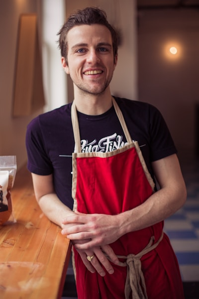
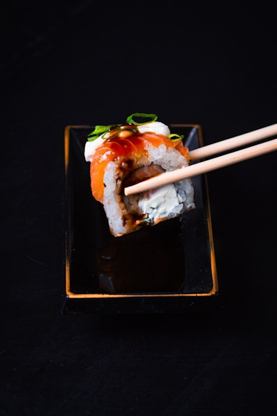
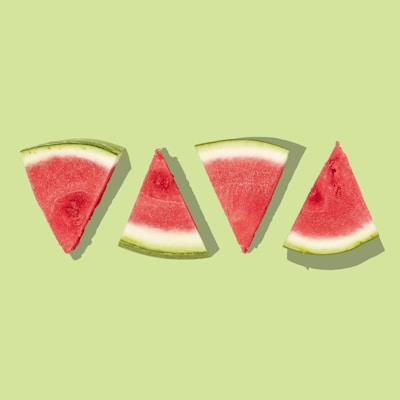

✦ The People Behind It
Meet the Team
Passionate cooks and hosts who put their hearts into every plate.

Abraham Tekle
Founder & Head Chef
Born in Eritrea and raised with a deep love of traditional cooking. Abraham brings decades of family recipes and culinary passion to every dish he creates in Calgary.

Miriam Haile
Head Cook – Ethiopian
Miriam specializes in classic Ethiopian stews and vegetarian dishes. Her Doro Wat and Misir Wat are the most ordered dishes on our menu.

Yonas Berhe
Eritrean Cuisine Specialist
Yonas grew up in Asmara and brings authentic Eritrean flavours to Calgary. His Zigni and Shiro recipes are rooted in generations of tradition.

Tigist Alemu
Pastry & Beverages
Tigist handles our traditional Ethiopian coffee ceremonies and honey wine (Tej). Her pastries and sambusa are Calgary's best-kept secret.